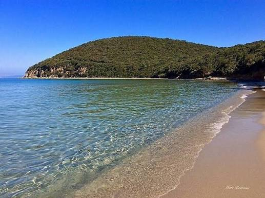
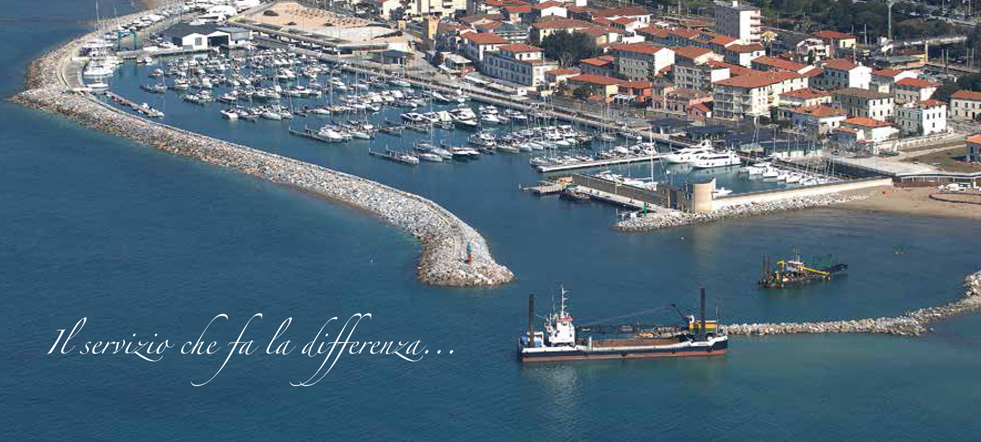
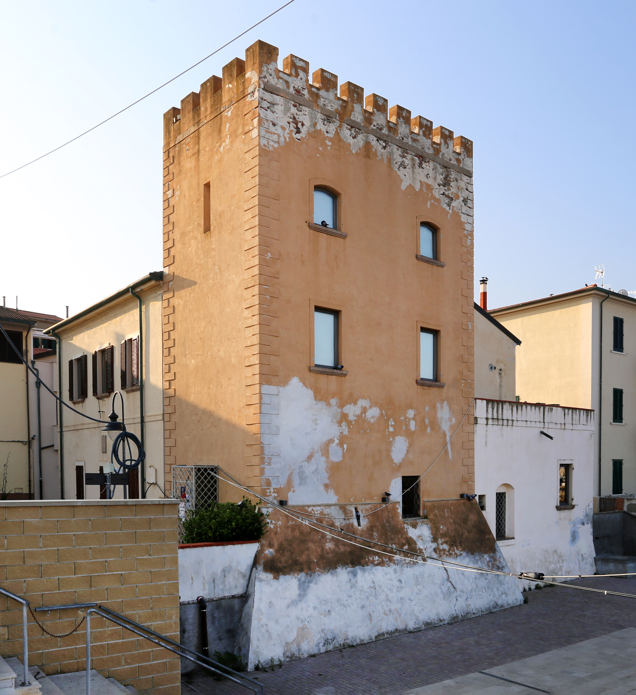
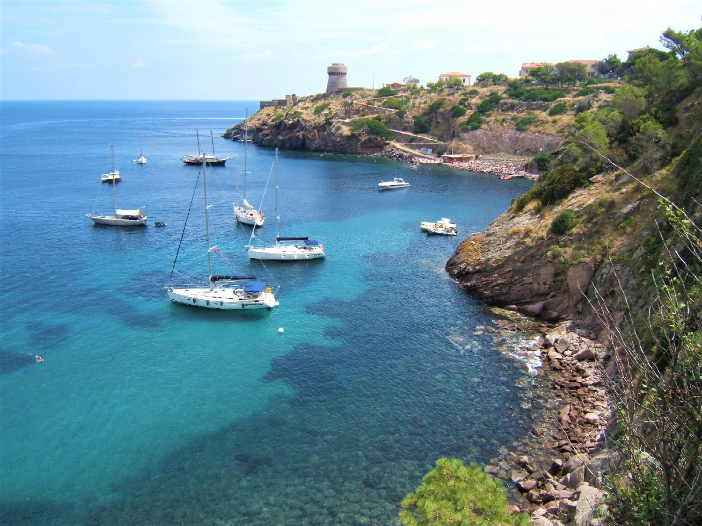

Parco di Rimigliano
Un'oasi verde che costeggia il mare per chilometri. Una fitta pineta perfetta per passeggiate e picnic, che si apre su una spiaggia libera e selvaggia con dune di sabbia.

Un'oasi verde che costeggia il mare per chilometri. Una fitta pineta perfetta per passeggiate e picnic, che si apre su una spiaggia libera e selvaggia con dune di sabbia.

Il cuore della movida e del passeggio serale. Una "Marina" moderna dove ammirare le barche, gustare un aperitivo al tramonto e prenotare gite in barca.

Edificata dai pisani e poi potenziata per difendere la costa dalle incursioni dei pirati. Oggi è il simbolo storico del paese e si trova proprio davanti al mare.

Dalla spiaggia puoi vedere l'Isola d'Elba, Capraia e la Gorgona. Dal porto partono escursioni giornaliere per esplorare queste isole mozzafiato, famose per le acque cristalline e le calette nascoste.